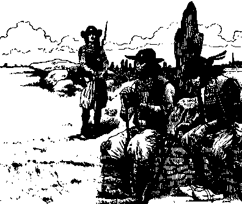

Ar Chouanted

Ton 1
Kempennet gant Christian Souchon
|
1.Ar re gozh hag ar merc'hed hag ar baotred vihan,
|
6. Ha pa oant deut da gregiñ, eñ darc'he el un oac'h
Gante bep a vuzuilh vat, gantañ 'met e benn-bazh, E benn-bazh, hag e chapled eus a Santez-Anna, Ha kement a dostae, a oa pilet gantañ. 7. Ha toullet-kaer oa e dog, ha toullet e chupenn, Ha lod eus e vlev troc'het gant un taol a sabrenn, Hag ar gwad a zivere dimeus toull e gostez Ha n'arzave o tarc'hout, hag ouzhpenn e kane. 8. Ken n'hen gwelas ket mui tamm, hag hen gwelas en-dro, Hag hen tennet a gostez dindan ur we'enn derv, O ouelañ leizh e galon, chouket gantañ e benn, An Aotrou Tinteniag paour a-dreuz war e varlenn. 9. Ha p'achue an emgann war-dro an nozvezh, Chouanted a zidoste, re yaouank ha re gozh, Hag a denne o zokoù, hag a lare el-se : - Setu 'mañ goune'et ganeomp, hag hen, siwazh, marv eo ! - |
Versions originales tirées des carnets de collecte de La Villemarqué

|
Version A
(retranscrite KLT)
a. Yann Blev-ruz a lavare d'e vamm un abardaez -Me ya gant Tinteniak, pa moned a blij dezhañ - Mar a blij dit da voned, ra vezo youl Doue! Maro da daou vreurig paour, te vo an trede! b.- Pa oas te va mab yaouank, paotr bihan en e c'havell, Tegouez ganout un huñvre, un huñvre ar brezel, Gwelet un den hag eñ ruz, en e dorn ur c'hleze Hag eñ da lammed ganout, ha plant hen ta goste. c. - Mar m'eus gwelet an den ruz, en e dorn ur c'hleze, A weliz un itron, o tisken d'eus an neñv Hag hi ken splann 'vel an heol, en he dorn louzoù hañv, Ha kerkent ma hi gwelet a bareaz va c'halon. d. Me welas Re Glas o tont war Manor Koatlogon: Eus a Vro-C'hall e oant holl, trizek-mil pe ouzhpenn, Gant ar Chouanted warno, deus a pep korn a Vreizh, Deus Treger, ha Gerne ha deus Gwene e-leizh. e. Ha Yann Blev-Ruz da gentañ a dache 'vel ur gwaz, Gant peb a Glas ur fuzuilh, gantañ 'med e penn-bazh, E penn-bazh hag e chapled deus a Zantez Ana, Ha kemend a dostee toud a dec'he dirazhañ. |
f. Toulet kaer e oa e dok ha toullet e jupenn,
Ha lod d'eus e vlev troc'het gant un daol a zabrenn, Hag ar gwad a ziredeg demeus toull e gostez, Ha n'azehe da dachout hag ouzhpenn e kane. g. Me m'eus laket em spered da zevel ar zon-mañ Da rei keloù dioutan d'e barez ha de vamm, Ma ouzo ema he vab ken divlamm ha ken yarc'h Vel en deiz oa bet ganet ganti barzh ar bed-mañ. Version B h. Paotr Yann Blev-Ruz...(=a1) i. Mes mar a blij dit... Da daou vreur o deus ma lezet. Te am lezo ivez!(=a3/4) j. Paotr Yann a oa tal Tinteniak a dache...(=e1) k. Ken a zaleen e gweled hag e gweliz en-dro, Hag eñ tennet a gostez didan ur we'en dero. Leizh e c'halon o ouelañ ken dous, chouket gantañ e benn. Hag 'n Aotrou Tinteniak marv ha treuz war e varlenn. l. Ha Chouanted o tegouezhout, re yaouank ha re gozh, Pa oa echu an emgann, war an abardaez-noz, Hag e tenne ho zokoù ha lare evelse: "Setu ma gounezet ganeomp hag eñ marv a-grenn!" |
Page manquante reconstituée
(Il ne subsiste que les extrémités de 8 vers)
m. Setu an eur o soni, setu an eur sonet Ma n'em gavfemp ur wech c'hoazh gant ar c'hozh soudarded Bec'h warnoc'h, paotred a Vreizh, bec'h warnoc'h ha gwelomp Mar 'ma 'n diaoul en tu ganto, ema Doue 'n tu ganeomp! n. Ar re gozh hag ar merc'hed hag ar baotred bihan Ha re na vent ket gouest da voned d'an emgann, A laro en o zier, araok mond da gousked Eur pater hag eun ave evid ar Chouanted. o. Ar Chouanted zo tud vad ha gwir gristenien, Savet da zivenn or bro koulz hag or beleien; Pa dremenint tal ho tor, m'ho ped, digorit dezhe: Roit dezhe kig ha bara gwenn na nac'het netra dezhe. |